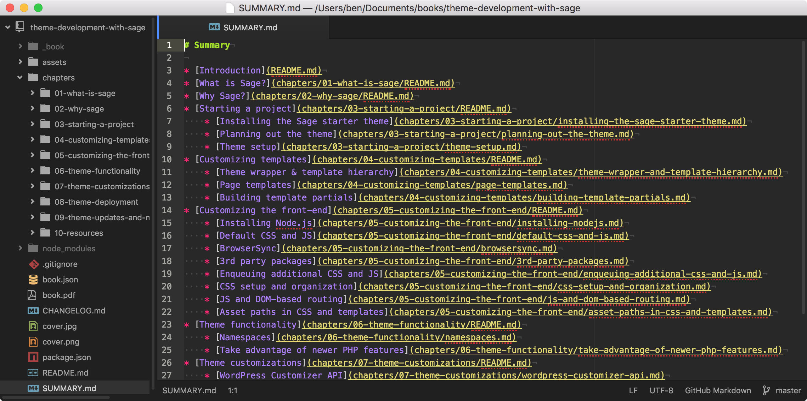

Theme Development with Sage
Thank you for purchasing a copy of the book. New versions to this book are released as the Sage starter theme goes through major changes. You'll receive lifetime updates and will be notified via email when a new version is released.
Please write to ben@roots.io with any corrections or feedback!
Licensing and cost
Unlike the Sage starter theme, this book is not open source. I reserve all commercial and moral rights to the book and supplied code (where not under an existing license).
Please buy a copy if you’ve received this book without paying.
About the author
Howdy! I'm Ben Word, a web developer & interaction designer who has been creating websites for over 15 years. My goal with our open source projects at Roots is to help developers create awesome websites, and I've always been passionate about web standards and tools that make our jobs more efficient.
My first encounter with WordPress was in 2004, and since 2006 I've been using it at my day jobs. I've had the opportunity to work on a WordPress multisite network that receives millions of views per day for the blogs and newspapers part of the Hearst conglomerate, along with running the marketing site for ShoreTel Sky.
Originally from Texas, I now live in the west side of Colorado Springs with my two dogs. I love traveling, overlanding, and climbing. I'm new to yoga and slacklining, and hopefully soon mountain biking.
Thank you
I'd like to acknowledge and thank:
-
Everyone who has contributed to Roots by helping others on the forum, spreading the word, committing code, opening issues, purchasing our educational materials and plugins, and more. Thank you so much for your support.
-
Craig, who helped evolve Sage into the next version by reworking almost the entire theme. The build process, the file restructuring, the conversion to ES6, and more, are thanks to the work that Craig has done.
-
Scott Walkinshaw, my good friend, for all of the time he's put into Roots and our projects, despite how he never uses WordPress outside of Roots and is naturally a Ruby programmer.
-
Phil Nelson, for the countless contributions to Trellis, and his tremendous level of detail with support on Discourse, GitHub, and all of his work in general. He inspires me with his patience and kindness.
-
Kalen Johnson, for providing countless hours of support and contributions to Roots projects, especially the Blade implementation in Sage 9. Still looking forward to trying one of his beers.
Tools used to make the book
This book was created with GitBook. The source files are in Markdown which allows for painless code example blocks, as well as letting me write with a syntax that I'm familiar with.
- GitBook with a custom theme
- Pages edited as Markdown in Atom
- Git is used for version control
- Sass is used for styling

There are some GitBook bugs that affect the various formats of this book that I'm working on trying to improve.
Who this book is for
This book is not an introduction to WordPress, or themes, and expects that you’ve done theme development before. Things you should understand:
- Keeping projects under version control with Git
- Command line basics
- HTML5, CSS preprocessors, basic JavaScript (with ES6), basic modern PHP
- WordPress template hierarchy
- Loops and
WP_Query - Conditional tags
- Template parts (
get_template_part) - Enqueuing scripts and stylesheets